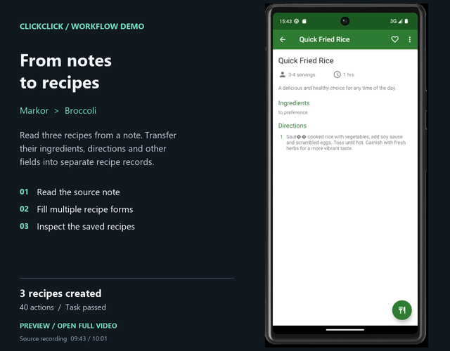
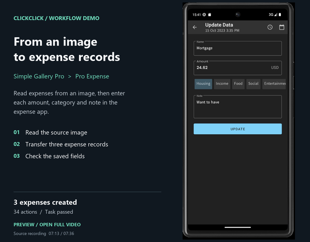
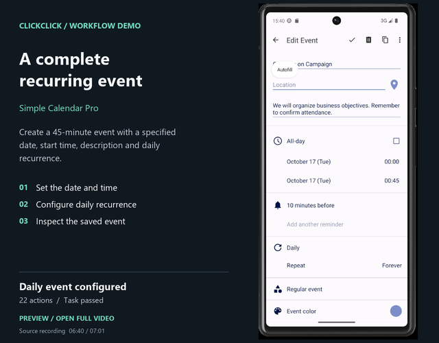
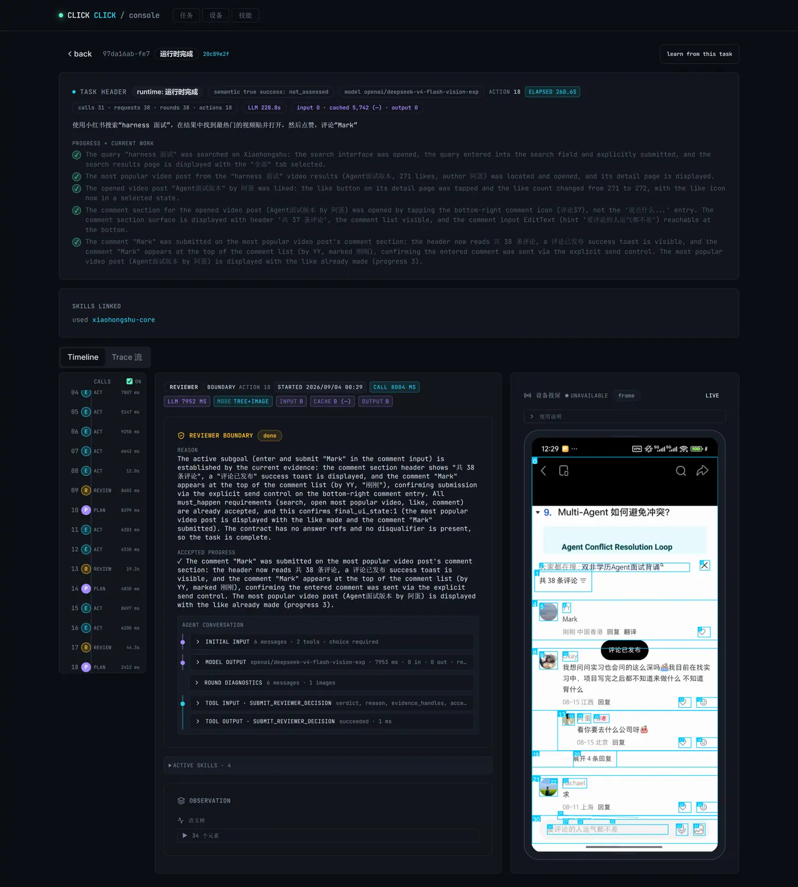

Plan and adapt
Break a request into stages, react to new screen evidence, and continue from completed work.
Describe a goal in natural language. ClickClick plans the work, operates Android apps, and shows you what happened at every step.

ClickClick combines model decisions with a runtime built for long, changing Android workflows.
Break a request into stages, react to new screen evidence, and continue from completed work.
Read source information, fill forms, manage collections, and carry task context between apps.
See screenshots, model decisions, active skills, action receipts, and the resulting device state.
The examples below are separate successful demo recordings. Open the repository for full videos and task details.
Carry ingredients and directions from a note into three saved recipes.
VIEW DEMO ↗
Read expenses from an image and enter amounts, categories, and notes.
VIEW DEMO ↗
Set the date, duration, description, recurrence, and verify the result.
VIEW DEMO ↗The web Console connects live device state with the full execution timeline. Open a step to inspect its screenshot, model input, decision, tools, and action result.
How the Console works ↗
115 of 116 task instances passed AndroidWorld's official success checks with GPT-5.6-SOL. Explore every task, score, and saved step screenshot.
Open the results ↗official task success